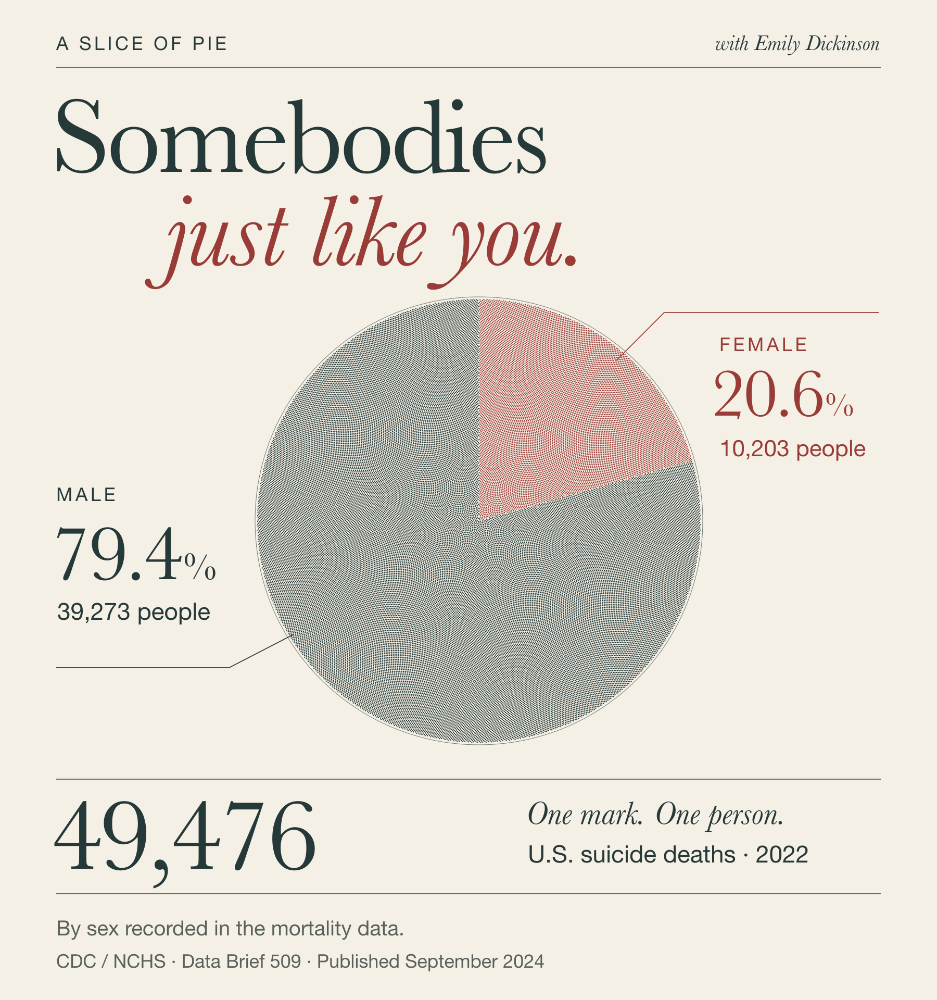
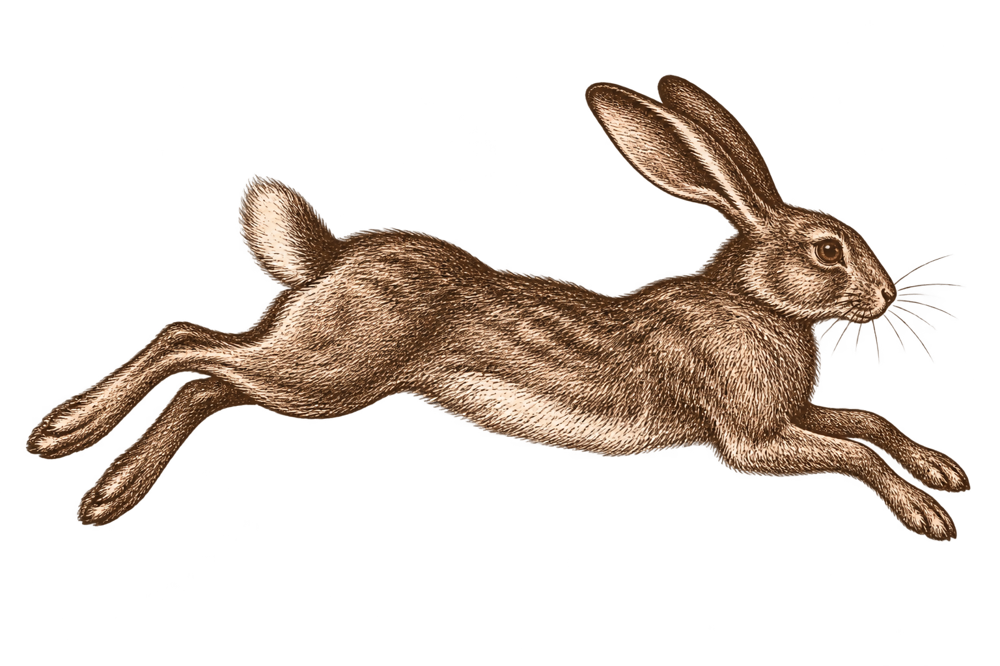

On…
Anni McHenry
Fall 2024
01 On why print matters
A Slice of Pie
with Emily Dickinson
I’m somebody nobody knows
You are somebody too
There’s countless of us everywhere
Somebodies just like you
I’m Somebody so are You
We move through fleeting time
Each step a part of commonweal
A rhythm and a rhyme
You are Somebody. So are They,
We all belong - you’ll see
The world is small but space is vast
For You, for Them, for me.
How bright to be Somebody
How easy like a bike
To tell Nobody - “one more day”
To hold a hand, guiding light

CDC / NCHS, September 2024. Figure added 2026.
02 On how place or environment affect deep work
Chads Who
Do Parkour
A hanging pot swayed from a hook I placed outside my bathroom window.
The key to gardening is mastering the delicate balance between the vessel, the flora, and the sun. Some plants make it easy work - surviving, often thriving, as the result of neglect. Others require you to bleed for the sweet, vibrant reward they tease, only offering up their bounty when you get it just right. For these voracious vivacious vegetation a gardener will go to war. As one would have it, this one did.
I’ve been trying to grow something pretty outside my bathroom window. My every attempt consistently met with tragedy. The first flowers I picked got too much sun. They drooped, then they shriveled, before they dropped. The second flower I picked got too much shade. They too drooped and dropped.
A hanging pot swayed from a hook I placed outside my bathroom window.
Not one to be deterred from finding the perfect flower for the perfect spot - I discriminately picked a third, the Flaming Katy, her name alone implied a residence weaker pansies couldn’t dream of possessing. Flaming Katy preens for morning rays and mid-day drinks. Her vibrant pink blooms spill over the edge, dripping from deep green waxy stems. Seeing Flaming Katy every morning outside my bathroom window makes me smile.
A hanging pot swayed from a hook I placed outside my bathroom window.
Katy and I settle into our delicate rhythm. I make time every day to care for her. Katy blooms so big and so bright it feels like she’s been here all along. I lose grip on the image of the cold cement patio it was before Flaming Katy. The dead commune nearby, a mausoleum of my failures - the lifeless corolla the only signs remaining. Until one Saturday morning when I spot with horror a tapestry of decay, where lifeless fragments of pink clung to bare soil below their pot, merely a whisper of their former vibrant selves.
A hanging pot swayed from a hook I placed outside my bathroom window.
Early one morning, earlier than usual, I looked through dense grey fog to see a portly, rotund, rodent sitting in the middle of my hanging pot with the smug satisfaction of a hedge fund manager named Chad. Narrowly a handful of Flaming Katy remained, death by furry-parkour-ninja - Sciurus Carolinensis - the common grey squirrel.
A hanging pot swayed from a hook I placed outside my bathroom window.
In the end I was no match for a rodent who knew parkour. We’re both pretending to be surprised. I say good bye to the last few blooms of my once vibrant Flaming Katy, who now retreats to safer ground in attempt to escape Parkour Chad. I resign. A picnic table, with a seat for Chad, now protrudes from where
A hanging pot swayed from a hook I placed outside my bathroom window.
The rest of the season passes amicably. The oaks leaves start to turn to rust as cool mornings set in. In the afternoon I work - cutting dead flowers, trimming leggy branches, and covering delicate roots for a harsh winter chill. In the once bare soil below Chad’s picnic table where the pot once swayed, I peek a vibrant pink petal tipped on deep green waxed stems - spreading wide, reaching, striving, determined - Flaming Katy made it after all.
03 On early experiences with books & reading
Noisy Nora
Nora was a “bull in a china cabinet,” my mom used to say. A phrase she had used to describe me countless times. Nora was a mess, but she was a mess who was loved in despite of, and THAT saved her.
If you flipped
fast enough,

the small brown bunny darted across the pages of this small hardback. I saw me, or rather my faults, presented in a nuanced quirky way—palatable. The family pyromaniac who set the couch on fire (accidentally) who cut a hole in her water bed on the second floor, or the spray paint can busted with a rock. I saw a novel version of myself on the page. Noisy Nora fortified a kernel inside me - a budding notion, visceral—it’s ok to be noisy.
Noisy Nora, like Emily Dickinson, gives the reader permission to embrace the conventionally unloveable tropes each archetype must take up the mantle to embrace or overcome. To curve or sharpen. To bend or reinforce. Once again, in the delicate balance between duality and singularity, the choices (lack of choices) associated to each give us (take away) space to define ourselves.
04 A fiction fragment
An ending
that just began.
Today was a hard day. Not that I expected death to be easy but I certainly didn’t anticipate having to try so hard at it. Something you’ll learn about me - my expectations are ludicrously capacious. When this all started I thought I’d have time to love. Time to learn. Time to wait just a bit longer. I should be happy that I now have all the time - quite literally - my future is endless. Whoever said the afterlife is for resting had clearly not been the prophetic savior of an oppressed peoples, destined to carry the burden across the veil. The one thing I don’t have time for is rest.
The letters of my name have yet to be etched into the smooth black granite headstone. I considered skipping the formal rite all together - forgoing the whole black umbrella charade of it all. But something about this specific piece of stone - a smooth black feature with grey veins that look like lightning strikes across the sky. Chiseling the letters of my given name into the waiting stone is the only task that remains. It seems too final for an ending that just began.
05 On Flow State
Words for later.
The prow spirit that adorned my ship.
She knew the feel of it like a printer knows the weight of paper. She rubs her thumb across the stained page.
The words so old -
they resist smudge.
It can’t be wiped away. What was done is done, even with all the pressure she focused to the lined fat pad of her thumb.